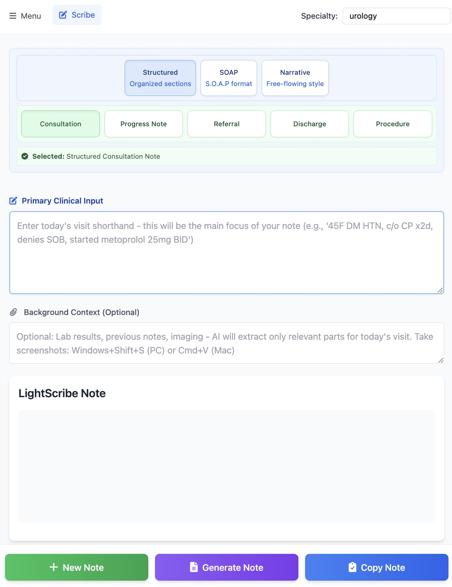

Same Architecture, Different Source

LightScribe is not a separate product—it is ChartPrepper's provenance architecture applied to a shorter, clinician-authored source. The physician types or dictates a brief seed note, and LightScribe expands it into conventional clinical structure. Every expanded sentence anchors to a span in the seed note. Canonical expansions (e.g., "S1 S2 normal, no murmurs rubs or gallops") only appear when the seed authorizes them. Content the clinician did not assert is suppressed.
Inverted Audit Contract
A VHA evaluation of 11 AI scribe tools (Reddy et al., Annals of Internal Medicine, 2026) found AI-generated notes scored lower than human notes across all 10 PDQI-9 domains—with the largest deficits in thorough, organized, and useful. Physicians report the same pattern: physical exam findings dropped despite being stated aloud, histories that are "too good," and a re-read tax that erodes the time savings.
LightScribe inverts this contract. The clinician's seed note is the source of truth—the model cannot lose what the clinician chose to assert. The audit question shifts from "did the model hear everything I said?" to "did the expansion stay faithful to my seed?" Every physician who has felt the "I have to re-read everything anyway" tax understands why this matters.
Features
Provenance-Backed Expansion
Every generated sentence traces to a span in the seed note. The same structural guarantee as ChartPrepper's referral mode—not prompt discipline, but an architectural constraint.
Custom Templates
Pre-built or custom templates for consult notes, SOAP notes, and patient summaries—matched to clinical scenarios and physician preferences.
Seed Note Input
Brief typed or dictated notes during patient encounters. Not ambient capture—the clinician controls what enters the source of truth.
Security and Privacy
- End-to-end encryption for data in transit and at rest
- Canadian data sovereignty—all data stored within Canada
- Aligned with PIPEDA privacy principles and provincial privacy requirements
- Self-assessed alignment with HIPAA security protocols (not certified)
- Privacy by Design approach—automatically filters PHI
- No data used for AI training
Status
LightScribe is deployed in real clinical environments as a mode of ChartPrepper, sharing the same provenance architecture. The approach generalizes from referral summarization to note expansion under a single structural guarantee. Available for pilot use with select institutions.